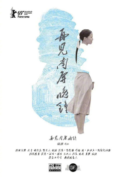

LGBT+电影
欧美
与斯科特共进早餐 Breakfast with Scot（2007）
艾瑞克是一位事业颇为成功的冰球运动员，在这项充满了对抗的体育竞技项目中，艾瑞克练就了一幅壮硕的体格和一颗充满了勇气的内心。随着年龄的增长，艾瑞克必须考虑退居二线了，在他的人生规划中，他将成为一名体育评论员并和自己的同性恋男友山姆走入充满了幸福和浪漫的二人世界。
令艾瑞克没有想到的是，山姆竟然带来了一个“拖油瓶”——十一岁的男孩斯科特，作为斯科特的法定监护人，山姆有责任照顾这个孩子的衣食住行。斯科特是个特殊的男孩，他个性软弱举止扭捏，这一切都和艾瑞克的期望相反，看着眼前“不成器”的斯科特，艾瑞克决定给他来一个“特殊训练”。
天佑鲍比 Prayers for Bobby（2009）
本片根据真人真事改编。Bobby是一个善良、虔诚的少年，有爱他的家人。但在他向家人坦白自己的性倾向后一切改变了。母亲Mary认为同性恋会下地狱的训诫，想尽办法矫正儿子。而Bobby的痛苦与日俱增。在满20岁生日前Bobby认识了开朗青年David，可Mary拒绝接受，并以有一个同性恋儿子为耻。Bobby伤心的离开家最后选择死亡来结束内心的折磨。他的死彻底唤醒了家人，尤其是Mary，她在无尽的悔恨中开始接触同性恋人群，参加PFLAG小组，与神职人员探讨圣经解释。在翻阅儿子的日记后，她开始直面自己认同儿子。失去儿子的母亲在倾盆大雨中失声痛哭，雨水和泪水将固执、偏见和不理解洗刷得一干二净。Mary此后将毕生投入到同志维权事业中，帮助那些和Bobby一样的少年。
孩子们都很好 The Kids Are Alright （2010）
妮可和朱尔斯是一对相伴很久的同性伴侣。并有2个孩子：马上要18岁的乔妮和15岁的莱塞。妮可的医生职业很有压力常常忽视了朱尔斯日子还算太平的过着，直到有一天，莱塞向姐姐建议，他想和那个捐出自己精子的男人见一面。因为姐姐已经到了18岁，她有权利向家里提出这个要求。妮可和和朱尔斯同意了姐弟俩的愿望，他们见到了在生物学上的父亲保罗。可是见面之后会发生什么呢？这个平静而美满的家庭会因此出现裂缝么?
模仿游戏 The Imitation Game（2014）
二战期间，盟军苦于德国的秘密系统”英格玛“无法破译，政府召集了一批民间数学家、逻辑学家进行秘密破解工作，图灵就是其中之一。计划刚开始图灵遭到了以休为首的组员和领导的排斥，幸好军情处部长孟席斯帮助他立项研究破译密码的机器，而图灵则变成了负责人，招收了新的成员琼开始了艰难的工作。琼很快就迷上了图灵，由于她的帮助所有组员空前的团结，并于两年后成功破解德军的密码。图灵一度与琼订婚，但实际上他隐瞒了一个秘密，因为这个秘密他也遭受了非人的待遇……
丹麦女孩 The Danish Girl（2015）
1926年哥本哈根，风景画家艾纳和擅长人物画的格尔达结为夫妇。因为模特失约，格尔达为顺利完成画作说服了艾纳穿上女装救场。这次意外令艾纳多出一个女性人格“莉莉”，而后者亦成为妻子的灵感女神，让格尔达声名鹊起。只是随着沉睡女性人格的被唤醒，艾纳开始厌恶自己作为男性的身体，他渐渐发现莉莉不但是艺术存在，更是真正的自己。格尔达也没有想到只是临时起意的游戏，竟为自己人生投下了一颗震撼弹，她该如何继续爱她的伴侣？她们在各种社会非议和误解中不离不弃，最后格尔达鼓励艾纳彻底变成莉莉......
维瓦 Viva（2015）
无父无母，沉默寡言的少年荷稣在荒凉小镇过着边缘人的生活，靠着为街坊婆婆妈妈理发的微薄收入度日。一次偶然的机会他站上变装皇后的舞台，身着华丽粉墨登场的孤独少年找到了前所未有的力量。然而自幼缺席的父亲却在此时服刑期满归来。
月光男孩 Moonlight （2016）

奇伦的母亲宝拉吸毒成瘾根本无心照顾孩子，奇伦从小在孤独中长大，因为过于瘦小的身材而时常遭到周围人的欺侮和作弄。一次偶然中，奇伦结识了毒贩胡安，从此，胡安和其女友特蕾莎的住处成为了奇伦的第二个家。
凯文是奇伦唯一的朋友，随着时间的推移，两人之间的感情渐渐超越了友谊。然而，为了隐藏自己的性取向，凯文不得不在同伴的怂恿下对奇伦大打出手，之后，两人再也没有见过面。一晃眼多年过去，奇伦忽然接到了凯文打来的电话，两人终于决定正视各自心中真正的感情。
普通女人 Una mujer fantástica（2017）
玛丽娜是一名跨性别主义者，和一位名叫奥兰多的男子正在同居之中。奥兰多虽然年长玛丽娜许多，但他包容而又善良，给予了玛丽娜许多快乐的回忆。然而，某一天夜里，奥兰多因为突发疾病被送往医院，最终不治身亡。此时的玛丽娜并不知道，比起失去爱人，她将要面的是比这残忍的多的事情。
玛丽娜想要参加奥兰多的葬礼，却被奥兰多的前妻严令禁止。与此同时，因为身份不明，她也将失去自己和奥兰多居住的房子。更糟的是，一名私家侦探被雇佣开始调查玛丽娜的隐私，因为她被怀疑和奥兰多的死有牵连。
爱你，西蒙 Love, Simon （2018）
每个人都值得拥有一个伟大的爱情故事。但是对一个17岁的高中生Simon来说这一切却是件超複杂的事：第一、没有人知道他是同性恋；第二、他也搞不清楚自己爱上跟他一样有同样困扰的不具名网友到底是何方神圣？？？为了解决这两个大麻烦，赛门展开一段爆笑又吓人的解答过程，但他没料到的是，最后得到的答案却从此改变了自己的人生。
被抹去的男孩 Boy Erased（2018）
在阿肯色州一座封建保守的小城，浸信会牧师19岁的儿子向父母出柜。男孩却被迫参加教会支持的同性恋矫正项目来“治愈”同性恋，否则将会付出失去亲人、朋友和宗教信仰的代价。他起初参与了含有12个步骤的残酷治疗，但最终鼓起勇气逃跑，选择拥抱真正自我。
女孩 Girl （2018）
主角 Lara 于15岁之「老龄」才加入芭蕾舞班。由于较其他女孩迟起步，她每日下尽苦功，甚至练到脚尖破皮流血亦不肯歇息。
Lara 的梦想不只是成为芭蕾舞蹈员——她还想成为一个女孩。是的，「他」原是家中的长子，名叫 Victor……犹幸爸爸一直在旁鼓励﹑陪她接受荷尔蒙治疗，全心全意支持她完成梦想。
亚洲
喜宴 The Wedding Banquet（1993）
伟同是事业有成的男同志，与男友赛门在美国过着幸福的同居日子，烦恼来自要用各种招数应对远在台北的父母的一次次逼婚。伟同被逼以“乖乖仔”形象修书一封声称会在美国结婚，没料父母想亲眼见证。无奈，他只得拉上来自上海的不得志的女艺术家葳葳“假婚”，想逃过一劫。
父母对葳葳相当满意，却对伟同的草率态度不满，为让父母满意尽快返回台北，伟同犹如“拼命三郎”使出了浑身解数。但人算不如天算，不断的波折使得父母的返台日期一次次推迟，令他和赛门的感情亮起“红灯”，而葳葳又意外怀上了他的孩子。似乎，伟同在强大的父母（传统）面前，只能选择去做一个 “表面正常”的男人。
春光乍泄 Happy Together（1997）
黎耀辉与何宝荣是一对同性恋人，为了有新的开始，他们怀着美丽的梦想（去看南美洲大瀑布）离开香港来到阿根廷，却在布宜诺斯艾利斯迷了路。黎耀辉想安下心来过日子，无奈何宝荣于夜夜笙歌中放纵着自己的生命，以期找寻更多的刺激，只当黎耀辉是他受伤后的港湾，两人分歧 、争吵越来越多，心的距离越来越远。
黎耀辉明白过去的日子不可能再复返时，决定离开何宝荣，而正是在他离开后，绝望的意味（对黎耀辉的爱）才在何宝荣的脑海中完整地浮现。
自梳 Intimates（1997）
一段穿越50年时空的真情。两个女人的苦难与爱恨，让人心碎却也心醉。现代女性阿慧从美国学习建筑业归来，在香港与大陆间经营事业，是个新时代的女强人。其男友也是其下属，二人感情渐淡，男友移情别恋。阿慧伤心却也无奈。阿慧父亲委托阿慧陪其幼年时的奶妈欢姑回乡探旧友，两人一见面就针锋相对，相处不太愉快。随着旅程的进行，二人矛盾不断，却也渐渐磨合。欢姑在开导感情脆弱的阿慧时，道出了一段隐藏在心底的往事。
40年代的广东顺德，女子还生活在男权制的枷锁下。年轻的意欢被父亲卖于地主，她宁愿做自梳女，宁死不从。被途经路过的杏花楼妓女玉环救下。玉环嫁给了当地织布厂厂主陈耀宗做了八姨太，与其他太太明争暗斗不断，却将意欢认为知己，二人无话不谈。意欢与青梅竹马的恋人两情相悦却难成眷属。玉环被丈夫出卖，成为军阀谈生意的筹码，愤怒之下，她离开了陈家。意欢对玉环不离不弃，令她十分感动，感情渐渐超越了友谊。而此时意欢与恋人在“买门槛”之夜出轨，玉环又担心又生气，终于忍不住告诉了意欢自己心底的秘密。有情人能否终成眷属？两个女人之间到底有什么秘密？阿慧能否度过情关？而欢姑苦苦寻找了50年的人又是谁？
蓝宇 Lan Yu（2001）
陈捍东和蓝宇的爱情始于一场性交易，其时，蓝宇是为生活所迫决定出卖自己肉体的清纯大学生，陈捍东则是情场老手，惯做“花花公子”的他虽对特别的蓝宇怦然心动，却也认为蓝宇不过是他众多玩伴中的一个。慢慢地，随着两人交往的深入，陈捍东发现自己的心已在不知不觉间被蓝宇充满。可是他又不敢肯定，试图通过与女人结婚证明自己的“正常”，当求证到那不过是错觉一场时，蓝宇早已消失在茫茫人海。
真正的爱情故事总是令旁观者唏嘘感叹，无论它是异性间还是同性间的。而令旁观者感动的爱情，往往又是同勇敢、固执、单纯等简单却难拥有的质量联系在一起的，蓝宇（和捍东）正属稀少的那类人，所以他们的爱情才显珍贵。
面子 Saving Face （2004）
年轻医生Wil是个美国华裔。她事业如意，工作干炼，但就是不爱打扮，不喜欢结交男朋友，这令到母亲非常操心。母亲刻意拉女儿到一些华人圈子的聚会，帮女儿物色对象，却总是一无所获。
不料母亲的生活也开始混乱——她怀上了孩子，却不愿公开谁是孩子父亲。为了面子问题，Wil的外公外婆把母亲赶出家门，责令她一定要找个人嫁出去。于是，妈妈投奔到女儿的门下，暂时寄宿在此，开始四处网罗男人相亲。
除了母亲的事情让Wil烦恼，她还有一个秘密需要苦心遮掩——自己女同的身份恐怕会让思想传统的母亲接受不了，于是，Wil和女朋友开始转战地下，二人爱得偷偷摸摸。人人为了面子，都有一个自己的心结，不知何时打开。
叔·叔 Suk Suk（2019）
柏与清结婚45年，育有一子一女，可谓上一代传统香港人眼中「幸福家庭」的典范。海的太太早年离他而去，与儿子永相依为命。虽然海与儿子一家同居，却无法感受到家的温暖。而柏与海迟来的相遇，也翻搅起两人尘封心底的爱慾。面对「爱情诱惑」与「社会道德价值」的拉扯，以及内心「原始慾望」跟社会传统「幸福家庭」的抉择，两人究竟要回归最原始的自己？还是重返风平浪静的生活，继续守护社会价值观所认可的「美好家庭」呢？
谁先爱上他的 Dear EX（2018）
宋正远因为癌症去世了，留下了老婆刘三莲独自拉扯着儿子宋呈希。让刘三莲无法原谅的是，宋正远人生的最后一段旅程是和一个名叫高裕杰的男人一起度过的。高裕杰是宋正远从前的恋人，只不过最终宋正远选择了结婚生子去过正常人的生活，而高裕杰则对他一直恋恋不忘。
更让刘三莲无法忍受的是，宋正远竟然将自己的保险金全部留给了高裕杰，不仅如此，自己叛逆的儿子竟然也选择了抛弃自己，赖在高裕杰的家里不肯走，这个男人到底是有什么魔力？！在宋呈希的眼中，高裕杰是一个吊儿郎当的男人，他沉默着凝视着这个男人，仿佛想要从他的身上看到另一个熟悉的身影。
再见 南屏晚钟 A Dog Barking at the Moon（2019）

讲述了在中国传统“家庭”概念制约下的两代人的故事。当妻子发现丈夫与另一个男人在一起，她的家庭避难所就成了礼教的束缚。
致允熙 윤희에게 (2019)
故事讲述在冬季的某天，女儿偶然看到一封寄给母亲的信，因而一起踏上回忆与和解之旅。
亲爱的房客 Dear Tenant（2020）
林健一是住在顶楼的房客，但他不只照顾年迈患病的房东周秀玉，还收养了她9岁的孙子王悠宇，这一切看似超出普通房客的行为动机，在周秀玉去世后受到质疑，很多人怀疑他是为了顺理成章的获得遗产，他百口莫辩，因为这些举动背后隐藏着一段不被承认的感情，也更是他思念一个人的方式，而那个人正是房东已经过世的儿子…